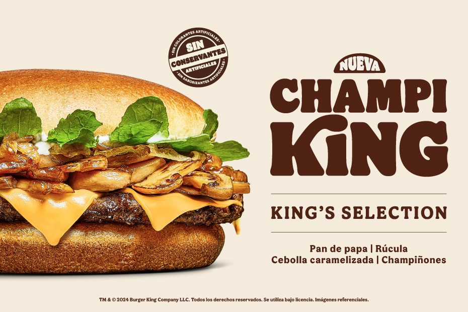
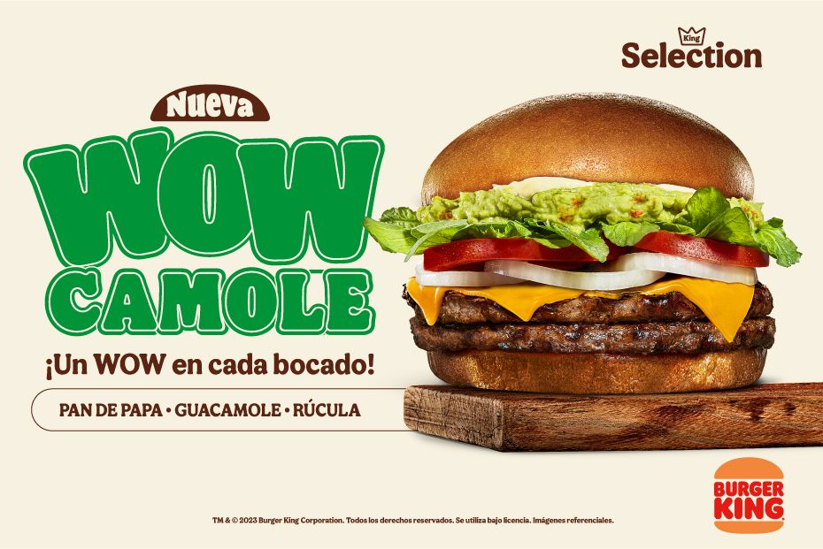

CHAMPI KING: Aprobada
Les dimos de probar a los habitantes de Empedrado, "La ciudad del champiñón", nuestra nueva Champi King para obtener la aprobación de verdaderos expertos en el tema.

Un WOW en cada bocado
Carne Whopper 100% vegetal a la parrilla, acompañada con mayonesa, delicioso guacamole, rúcula fresca, tomate, cebolla y queso cheddar. ¡Descubre la nueva WOWcamole hoy!

La forma de pedir tu Stacker
En Burger King, encendimos las parrillas para traer la nueva Stacker: con el mismo sabor que adoras, pero en un nuevo tamaño perfecto para apilar hamburguesas.